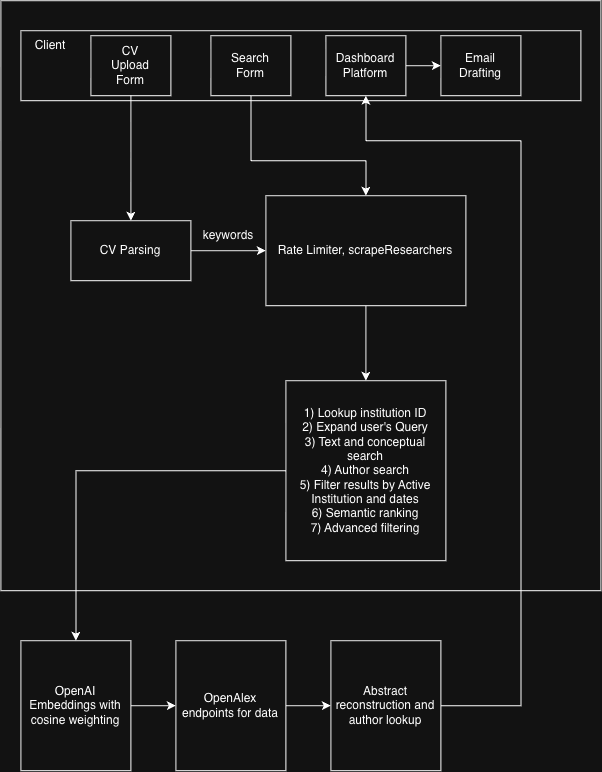

Software project
scrapr.site
Researcher discovery... semantically!.
I built Scrapr to help students find researchers whose recent publications align with their interests. This project explores the retrieval pipeline, ranking model, and engineering tradeoffs behind the search.
- Role
- Founder & Software Engineer
- Company
- JEB Digital Ventures
- Timeline
- Sep 2025 — Present
- Focus
- Retrieval · Ranking · Systems
The theory & core idea
The starting problem was finding researchers whose current work matched my interests.
Finding a suitable research opportunity is difficult. The real task is finding a professor whose current work aligns with you, at a lab that is actively publishing work you care about, and a principal investigator who can apply your skills to the next iteration of that work.
I had the skills to contribute, but finding the right research meant combing through pages of non-indexed, outdated, and deprecated projects. Labs cannot document every active project, researchers cannot optimize their SEO while doing the work, and much of the most interesting work sits behind a wall of “in-the-know.”
Scrapr treats this as a constrained entity-retrieval and ranking problem: given a free-text research interest, an institution, and a parsed CV, discover active researchers at that institution whose published work is semantically aligned with the student—and rank them so the next useful conversation is easier to start.
Recall vs. precision
Three retrieval strategies maximize recall. Semantic re-ranking and keyword boosts compress the candidate set for precision.
Latency vs. completeness
Up to 10 pages per search term, capped at 30 author profiles, bound an otherwise expensive paper–author cross-product.
Online compute vs. offline index
Every search fans out live to OpenAlex. The in-process embedding cache survives warm serverless requests; cold starts rebuild it.
Semantic fidelity vs. cost
1536-dimensional OpenAI embeddings provide semantic matching. Bag-of-words Jaccard similarity remains the reduced-quality fallback.
Mathematical model
A researcher’s score is the relevance of their single strongest publication. Titles provide a concise signal; abstracts carry more topical information.
The 40–60 weighting reflects a practical finding: abstracts contain more topical signal than titles. Exact keyword matches then act as a modest multiplier—strong enough to preserve literal intent without replacing the semantic comparison.
Interactive model
Rotate the papers around the query
Title similarity0.69
Abstract similarity0.80
Keyword multiplier1.00×
Reconstructing OpenAlex abstracts
OpenAlex stores abstracts as inverted indexes rather than plaintext. To read one, Scrapr flattens every word-position pair, sorts by position, and joins the words.
Input: { "machine": [0, 5], "learning": [1, 6], "is": [2],
"great": [3, 7], "and": [4] }
01 Flatten → [(machine,0), (learning,1), (is,2), (great,3),
(and,4), (machine,5), (learning,6), (great,7)]
02 Sort by position
03 Join → "machine learning is great and machine learning great"This runs on every work during discovery, potentially hundreds of times per search, so its performance matters.
Architecture & data flow
The client gathers a CV, institution, and research interest. The server resolves identity, widens the query, retrieves candidates, verifies current affiliation, and only then pays the cost of semantic ranking.

async function getInstitutionId(
collegeName: string
): Promise<string | null> {
const variations = getCollegeVariations(collegeName);
for (const name of variations) {
const response = await fetch(
`${OPENALEX_INSTITUTIONS_API}?search=${name}&per-page=1`
);
const data = await response.json();
if (data.results?.[0]) return data.results[0].id;
}
return null;
}getCollegeVariations() handles the asymmetry between names like “MIT” and “Stanford University” by trying raw, expanded, and stripped forms. Common shorthand such as “CMU” works; highly informal abbreviations remain an unresolved edge case.
Three-pronged retrieval
Query expansion turns a narrow term such as “optogenetics” into five to eight related academic terms. Three retrieval paths run against OpenAlex and accumulate candidates into one shared author map.
Traditional text search
The broadest net searches titles, abstracts, and available full text for every expanded term.
GET /works?filter=authorships.institutions.lineage:{id}&search={term}Concept-filtered search
The top related concepts catch papers that live in the right ontology even when their words do not match.
GET /works?filter=...lineage:{id},concepts.id:{c1|c2|c3}Direct author discovery
Author records expose researchers whose concept tags match even when no individual paper surfaced earlier.
GET /authors?filter=last_known_institutions.id:{id},concepts.id:{concept}The hot inner loop
addAuthorsFromWork() runs for every work returned by every strategy. It uses a cheap keyword score to choose which publication represents a researcher before the full embedding stage.
// For each authorship on a work:
// 1. Skip the work when its title matches an exclusion keyword
// 2. Score paper relevance with the fast keyword method
// 3. Match institution lineage or a directly discovered author ID
// 4. Apply the optional lab-name filter
// 5. Upsert the author; keep the more relevant publication
// 6. Add up to three recent works, deduplicated by titleAffiliation is a correctness gate
A work-level affiliation only proves where an author was when a paper was published. Scrapr checks last-known institutions so a former postdoc does not continue to appear in a university’s results years after leaving.
const atInstitution = (author.last_known_institutions || []).some(
(institution: Institution) =>
institution?.id === institutionId ||
institution?.lineage?.includes(institutionId)
);The lineage condition preserves legitimate matches when a department is a child of the university—for example, an EECS department nested beneath MIT.
The precision layer
After retrieval can produce more than 75 candidates, relevancy.ts re-scores each researcher using dense vector similarity. Embeddings are cached by the first 200 characters of input.
async function getEmbedding(text: string) {
const cacheKey = text.slice(0, 200);
if (embeddingCache.has(cacheKey)) {
return embeddingCache.get(cacheKey)!;
}
const response = await client.embeddings.create({
model: "text-embedding-3-small",
input: text,
encoding_format: "float",
});
const vector = response.data[0].embedding;
embeddingCache.set(cacheKey, vector);
return vector;
}function cosineSimilarity(a: number[], b: number[]) {
let dot = 0, magA = 0, magB = 0;
for (let i = 0; i < a.length; i++) {
dot += a[i] * b[i];
magA += a[i] * a[i];
magB += b[i] * b[i];
}
if (magA === 0 || magB === 0) return 0;
return dot / (Math.sqrt(magA) * Math.sqrt(magB));
}Each vector occupies roughly 6 KiB. For 75 researchers, title and abstract comparison requires at most 150 network calls before cache hits; the query embedding is computed once. A first-200-character cache collision is possible, though unlikely for academic text.
Failure modes & invariants
Every fallback protects a different property: availability, relevance quality, affiliation correctness, or persistence.
| Failure | Impact | Mitigation |
|---|---|---|
| Wrong institution match | Every result belongs to the wrong school. | Name variations improve matching; fuzzy result validation remains open. |
| Query expansion unavailable | Search continues with reduced recall. | Return the original topic as the only search term. |
| OpenAI unavailable | Ranking quality degrades. | Fall back to bag-of-words Jaccard similarity and warn. |
| Author verification fails | The unverified chunk is removed. | Fail closed and log the provider error. |
| History insert fails | Results render but are not persisted. | Log and return results; acceptable at current scale. |
| CV parsing fails | No CV-derived keyword boost. | Continue using query and institution context. |
| Embedding cache collision | A cached vector can mis-score one item. | Currently unmitigated; replace truncation with a full-content hash. |
If no works or authors match, the API returns an explicit error and keeps the user on the search form.
If every candidate fails current-affiliation verification, the dashboard currently renders zero results without an error.
Critical invariant
Credit is consumed before work is performed—never after.
checkRateLimit("search")
→ allowed? YES → write incremented counter → do work
→ allowed? NO → return 429Performance & instrumentation
A search is observable from institution resolution to the final ranked list. The terminal below replays the structured log sequence from a representative MIT query.
Observed performance
Where the 7–35 seconds go
| Phase | Estimate | Primary bottleneck |
|---|---|---|
| Institution resolution | 200–500 ms | 1–2 OpenAlex round trips |
| Query expansion | 500–2,000 ms | Gemini inference |
| Concept lookup | 200–800 ms | 1–4 OpenAlex round trips |
| Text search | 1–10 s | Up to 10 pages × N terms |
| Concept search | 1–5 s | Up to 10 paginated pages |
| Direct author search | 500 ms–3 s | 3 concept queries + batch work fetches |
| Affiliation verification | 200 ms–1 s | Batched author lookups |
| Semantic ranking | 3–15 s | Up to 150 embedding calls |
| Stats hydration | 500 ms–2 s | 3 batches of 10 author details |
| Total | 7–35 s | Embedding requests dominate |
The critical path is the embedding phase. At roughly 100–300 ms per call, 150 title-and-abstract requests in five-way parallel batches take about six seconds in the best case.